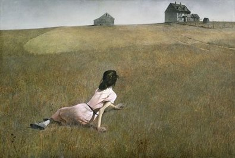

Christina's World
Andrew Wyeth · 1948 · Egg tempera on gessoed panel · 81.9 × 121.3 cm · Museum of Modern Art, New York
In copyright. Look and learn: shown for study, not for download.
Wyeth's wife Betsy posed for the body in this picture, and she also suggested its title. The woman it is named for, Anna Christina Olson, was 55 and could not walk; Wyeth had watched her crawling across the field from a window of the house. He turned thirty-one the year he painted it. It drew little notice from critics when the Macbeth Gallery in Manhattan showed it in 1948, and Alfred Barr bought it for the Museum of Modern Art for $1,800.